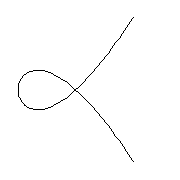

Real rational cubics through 8 points in R2
|
A cubic in P2 is the set of common zeroes of a cubic
equation
| Ax3 + By3 + Cz3 + Dx2y + Ex2z + Fy2x + Gy2z + Hz2x + Iz2y + Jxyz . |
The condition for a cubic to contain a point is a linear condition on the coefficients A,...,J. In this way, we see that the space of cubics that meet 8 points is a projective line. If p and q are two different cubics that meet 8 given points, then the set of cubics that meet those 8 points is given by all linear combinations Xp+Yq of p and q. Since p and q meet in a 9th point, it follows that every cubic in this family also meets that same 9th point.
Since every other point in P2 contains a unique cubic in this family, we see that there is a map from (P2 - 9pts) to the P1 of cubics Xp+Yq. If we blow up the 9 points in P2, we obtain a variety Z, and the map f from Z to P1 is our family of cubics. (The fibre over a point Xp+Yq of P1 is the plane cubic defined by the polynomial Xp+Yq.)
The Complex Case. We first compute the Euler characteristic of Z. Since blowing up a point in a surface amounts to removing that point and replacing it with a P1, each blow-up adds 1=2-1 to the Euler characteristic of the surface. (The point has Euler characteristic 1, and P1 has Euler characteristic 2.) In this way, we see that the Euler characteristic of Z is 12.
Consider the fibres of this map f. A general plane cubic is smooth and is homeomorphic to (S1)2, it has Euler characteristic 0. Thus the only contributions to the Euler characteristic of Z comes from singular fibres, that is rational plane cubics. If the 8 points are in general position, then we may assume that the family Z does not contain any cuspidal cubics, and so its singular fibres must all be nodal cubics. A nodal cubic is obtained from the 2-sphere by identifying 2 points (or contracting a simple S1 in the torus (S1)2). Thus the Euler characteristic of a nodal cubic is 1.
From this consideration, we see that there are exactly 12 singular fibres, and each is a nodal rational plane cubic containing the 8 points.
The Real Case. Suppose the 8 points are real. Then so is the 9th point, and we consider the real points XR of a variety X. As before, we compute the Euler characteristic of ZR. When a point on a real surface is blown up, we replace it by P1R=S1. This lowers the Euler characteristic by 1, as S1 has zero Euler characteristic. Since P2R has Euler characteristic 1, we see that ZR has Euler characteristic 1-9=-8.
A non-singular real cubic has either 1 or 2 disjoint components, each
homeomorphic to
S1, and so as in the complex case, the nonsingular fibres
of ZR do not contribute to its Euler
characteristic.
Unlike the complex case, there are 2 different real nodal cubics,
distinguished by the tangent lines to the branches at the node---either both
tangent directions are real, or else they are complex conjugate.
We display both below, the cubic on the left has 2 real tangent directions
and the one on the right has complex conjugate directions.
|  |
Thus we see that the number of real nodal cubics minus the number of
complex nodal cubics equals 8.
We enumerate the different possibilities:
| # real nodal | 8 | 9 | 10 |
|---|---|---|---|
| # complex nodal | 0 | 1 | 2 |
| # real rational cubics | 8 | 10 | 12 |
Thus to see that there are 8 points in the plane such that all 12 rational
cubics that meet them are real, we need only exhibit 2 complex nodal cubics
that meet in 9 points:
If we choose any 8 of those points, then the family of cubics meeting those
8 points contains also 10 real nodal cubics.
We display 2 such complex nodal cubics below.
We close with the following observation that in this problem of cubics, not all possible numbers of real cubics (0, 2, 4, 6, ....) can occur.